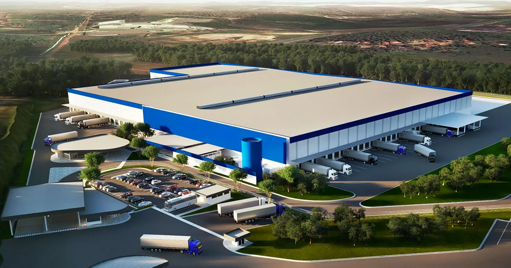

A Mirror Fashion é a maior empresa de comércio eletrônico no segmento de moda em todo o mundo. Fundada em 1932, possui filiais
em 124 países, suas lojas são credenciadas e funcionam a mais de 23 anos no mercado.
Nosso centro de distribuição fica em Parnaíba-PI - rua marechal ferreira nº567.

Centro de distribuição da Mirror Fashion
Compre suas roupas e acessórios na Mirror Fashion.Acesse nossa loja ou entre em contato se tiver dúvidas.Conheça também nossa história e nossos diferenciais.
História
Família Pelho
A fundação em 1932 ocorreu no momento da descoberta econômica do interior do Paraná. A família pelho , tradicional da região, investiu todas as suas economias nessa nova iniciativa revolucionaria para a época. O fundador Simões Pelho, dotado de particular visão administrativa , guiou os negócios da empresa durante mais de 50 anos, muitos deles ao lado de seu filho E.S pelho filho, atual CEO. O nome da empresa é inspirado no nome da família.